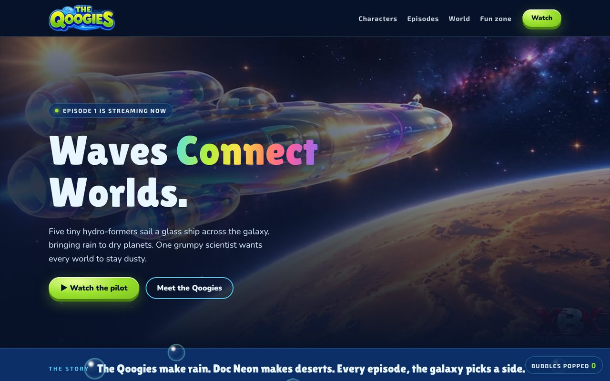
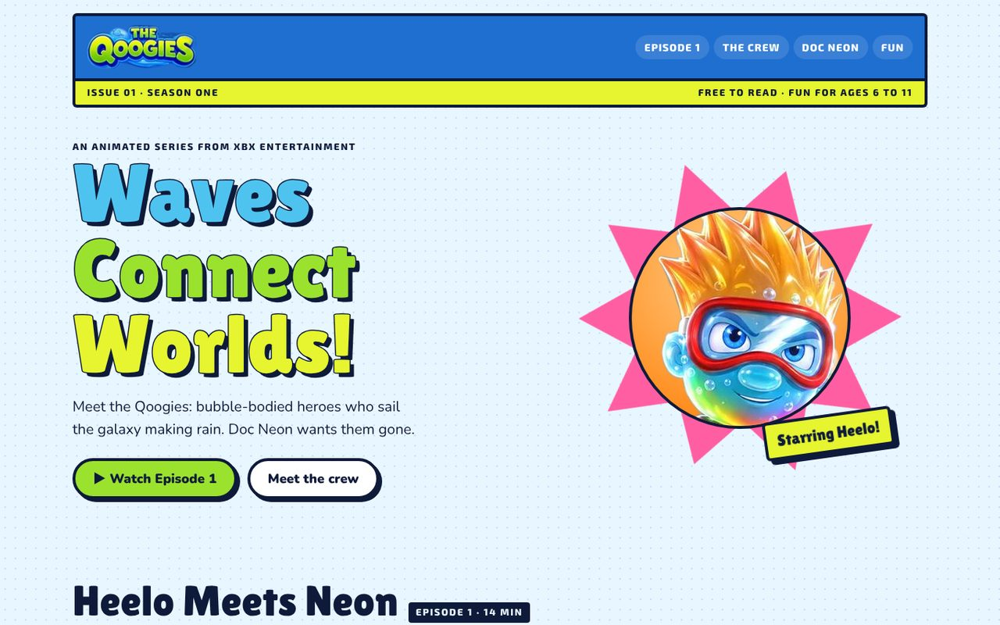
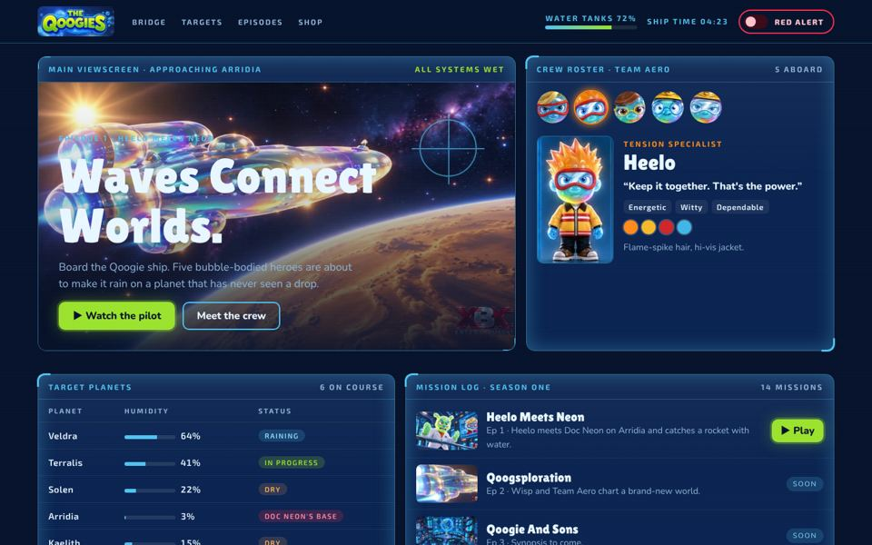
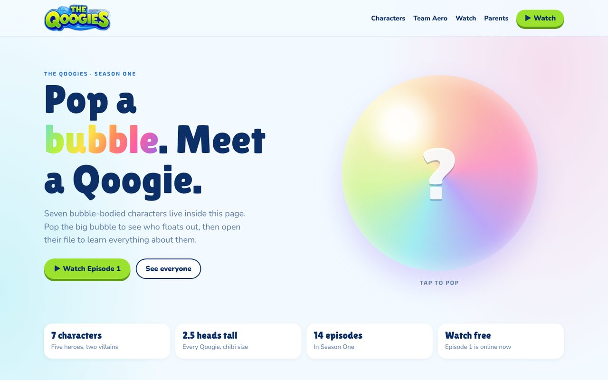
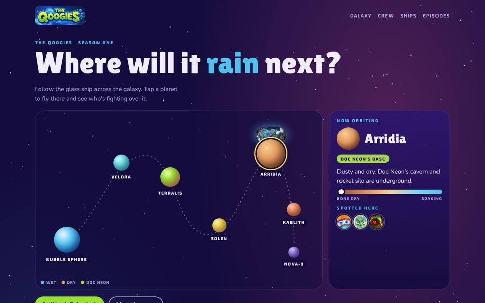
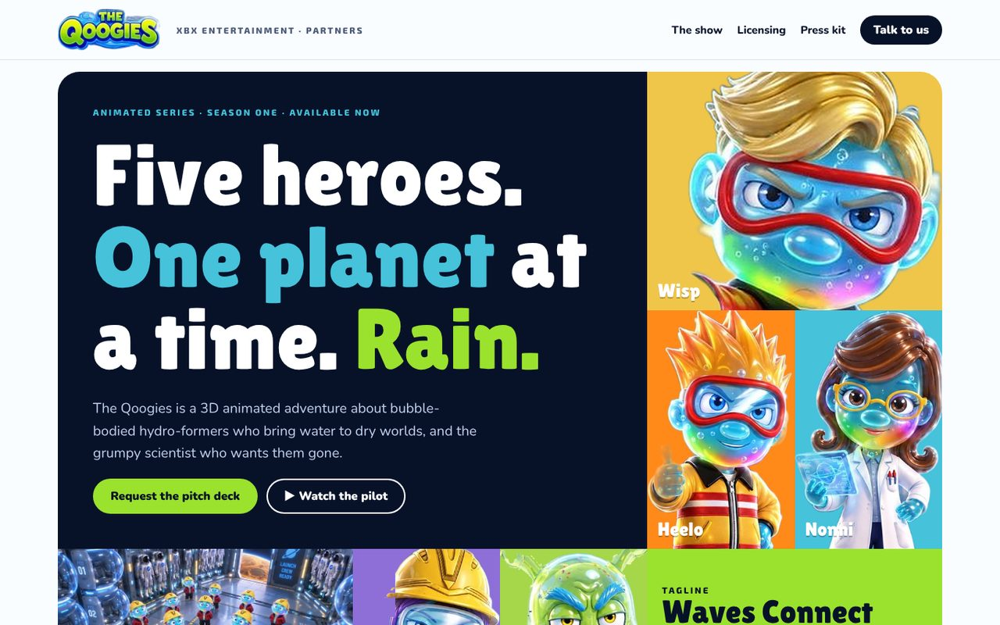
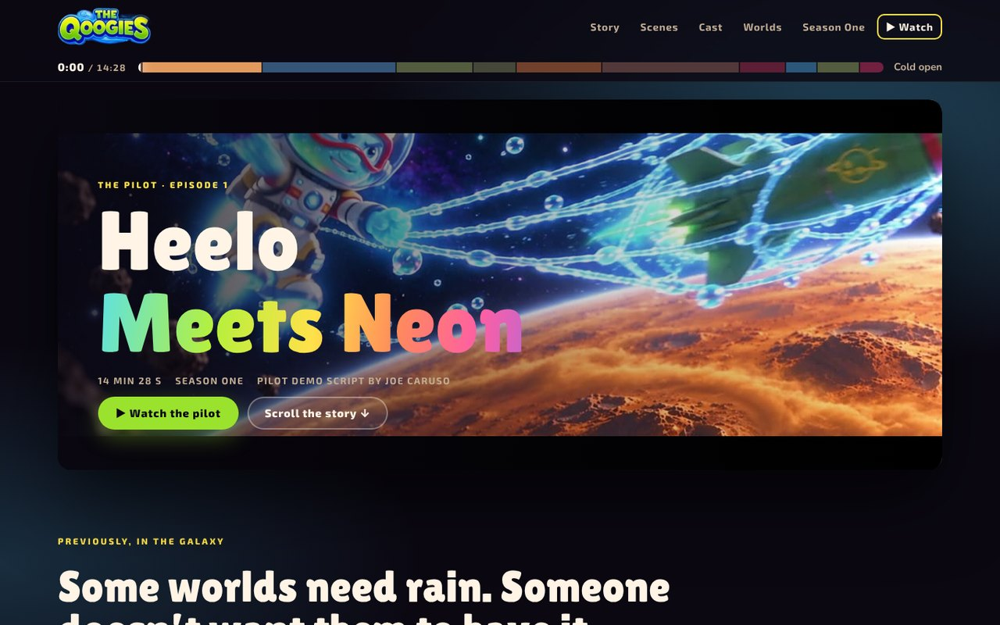
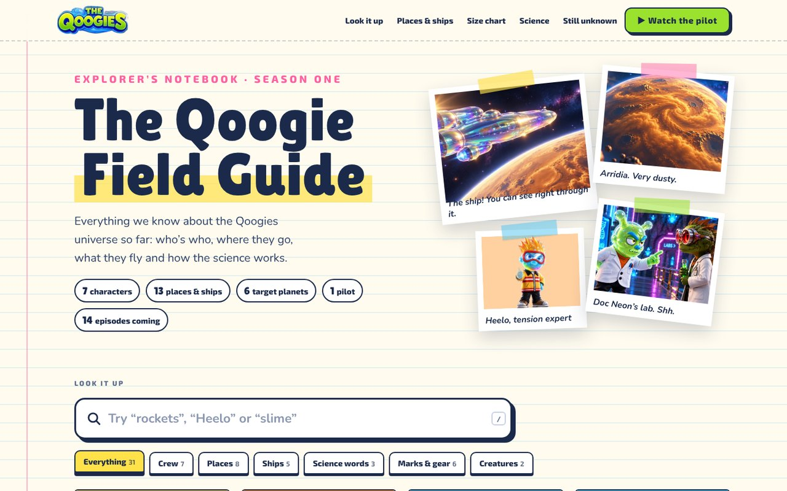
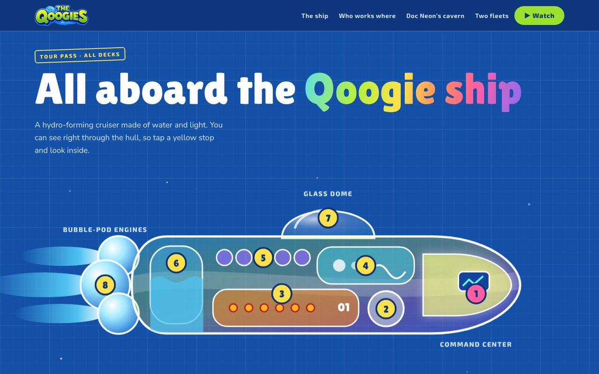
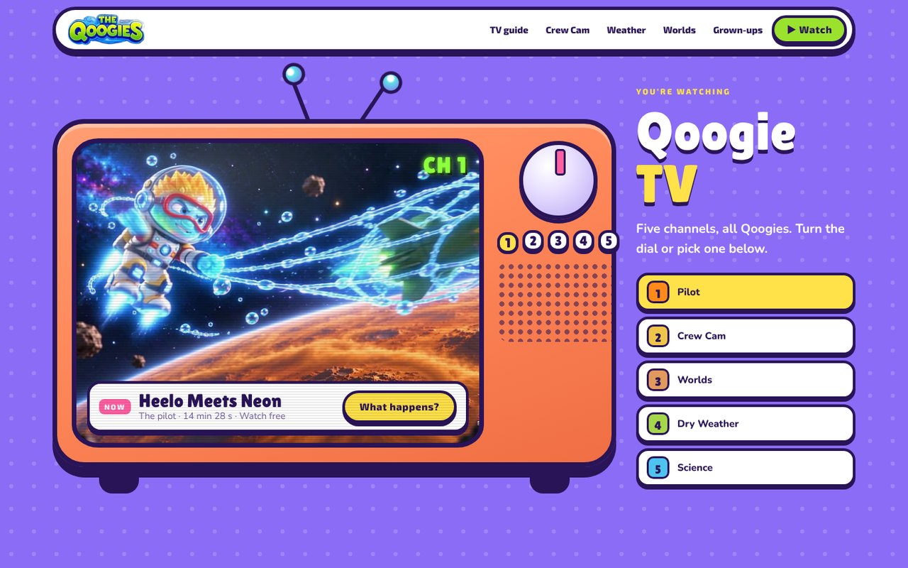

Ten ways to build the Qoogies home page
Each template is a full, clickable home page built from Brand Guide v2.0: the same logo, colors, fonts, characters and taglines, told ten different ways. Every template has a Worlds section: tap any place, ship or character to open its file.

Bubble Sphere
Template 1Deep underwater glass panels, straight from the guide's website chapter. Bubbles rise the whole way down and pop when you tap them. The page turns dusty lime when Doc Neon shows up.
Best for: the main fan site and watching the pilot.
Open template →
Sunday Funnies
Template 2The home page is a comic book. Episode 1 told in panels with speech balloons and sound effects, a crew sticker sheet, and a "Meanwhile..." splash page for Doc Neon.
Best for: kids who like it bright and loud.
Open template →
Launch Bay OS
Template 3The whole site is the Qoogie ship's console: viewscreen, crew dossiers, target planets, mission log. Flip the Red Alert switch and Doc Neon takes over the screen.
Best for: older kids and a game-like feel.
Open template →
Bubble Pop
Template 4Bright and light. Pop the big bubble to meet a random Qoogie, then browse a shelf of every hero and villain standing on colored plinths like collectible figures.
Best for: young kids meeting the characters for the first time.
Open template →
Galaxy Route
Template 5A star chart of the ship's route from the Bubble Sphere to Arridia and beyond. Tap a planet and the ship flies there, with a wet-to-dry meter and who's been spotted.
Best for: exploring the world and episode guides.
Open template →
Partner Deck
Template 6For buyers, broadcasters and licensees. Color-block hero where each character owns a tile, the show at a glance, licensing categories, a partner kit and a deck request form.
Best for: licensing, distribution and press.
Open template →
Episode One
Template 7The home page is the pilot. Scroll through ten scenes from the color script while a timeline fills from 0:00 to 14:28 and the page light changes with each scene. Ends with an end-credits cast list and a film strip of every world.
Best for: launching the pilot and getting kids to watch.
Open template →
Field Guide
Template 8An explorer’s notebook with a search box. Look up any character, place, ship, brand mark or science word, see how tall a Qoogie is next to a grown-up, try the science at home, and read the sticky notes on what’s still unknown.
Best for: curious kids, teachers and a show wiki.
Open template →
Ship Tour
Template 9A blueprint of the glass Qoogie ship with eight tour stops, then a drop through Arridia’s dust into Doc Neon’s cavern: Project Aquafy, the labs, the caterpillar canteen and the hangar, where you can launch a rocket up the silo.
Best for: showing off the world and future playset toys.
Open template →
Qoogie TV
Template 10A chunky retro TV you flip through five channels: the pilot, Crew Cam, Worlds, Doc Neon’s Dry Weather Report and Science Corner. Below: a TV guide for Season One, channel idents for the cast, and every world on Channel 3.
Best for: the youngest viewers and a playful, broadcast feel.
Open template →